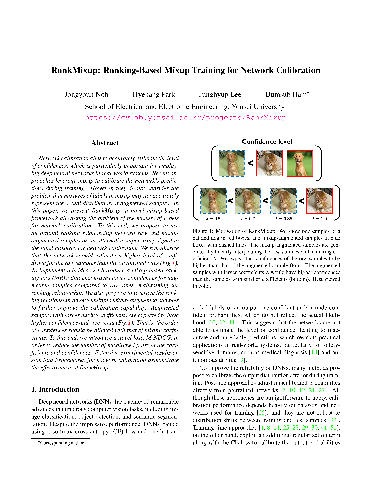

RankMixup: Ranking-Based Mixup Training
for Network Calibration
for Network Calibration
*ICCV 2023*
Abstract
Network calibration aims to accurately estimate the level of confidences, which is particularly important for employing deep neural networks in real-world systems. Recent approaches leverage mixup to calibrate the network's predictions during training. However, they do not consider the problem that mixtures of labels in mixup may not accurately represent the actual distribution of augmented samples. In this paper, we present RankMixup, a novel mixup-based framework alleviating the problem of the mixture of labels for network calibration. To this end, we propose to use an ordinal ranking relationship between raw and mixup-augmented samples as an alternative supervisory signal to the label mixtures for network calibration. We hypothesize that the network should estimate a higher level of confidence for the raw samples than the augmented ones (Figure). To implement this idea, we introduce a mixup-based ranking loss (MRL) that encourages lower confidences for augmented samples compared to raw ones, maintaining the ranking relationship. We also propose to leverage the ranking relationship among multiple mixup-augmented samples to further improve the calibration capability. Augmented samples with larger mixing coefficients are expected to have higher confidences and vice versa (Figure). That is, the order of confidences should be aligned with that of mixing coefficients. To this end, we introduce a novel loss, M-NDCG, in order to reduce the number of misaligned pairs of the coefficients and confidences. Extensive experimental results on standard benchmarks for network calibration demonstrate the effectiveness of RankMixup.
Results

Quantitative comparison with the state of the art in terms of ECE (%) and AECE (%) with 15 bins on the validation splits of CIFAR10/100 and Tiny-ImageNet. Numbers in bold indicate the best performance and underscored ones indicate the second best. Numbers in parentheses represent the results obtained using a TS post-hoc technique.
Paper
|  |
J. Noh, H. Park, J. Lee, B. Ham RankMixup: Ranking-Based Mixup Training for Network Calibration In Proceedings of the IEEE/CVF Internatioanl Conference on Computer Vision (ICCV) , 2023 [Paper on arXiv] [Code will be released soon] |
BibTeX
Acknowledgements
This work was supported in part by the NRF and IITP grants funded by the Korea government (MSIT) (No.2023R1A2C2004306, No.2022-0-00124, Development of Artificial Intelligence Technology for Self-Improving Competency-Aware Learning Capabilities, No.2021-0-02068, Artificial Intelligence Innovation Hub), and the Yonsei Signature Research Cluster Program of 2023 (2023-22-0008).